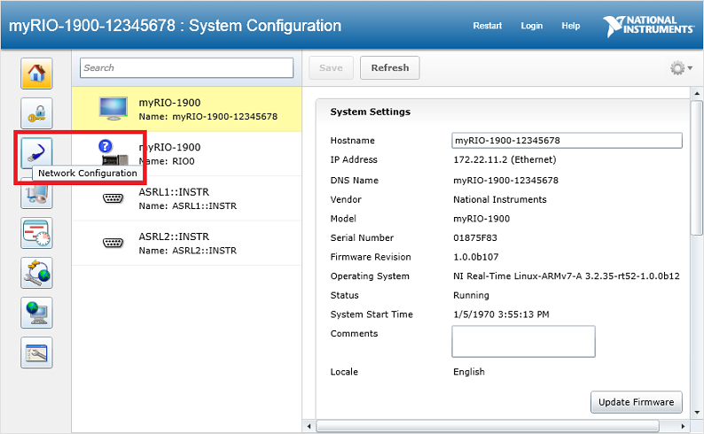
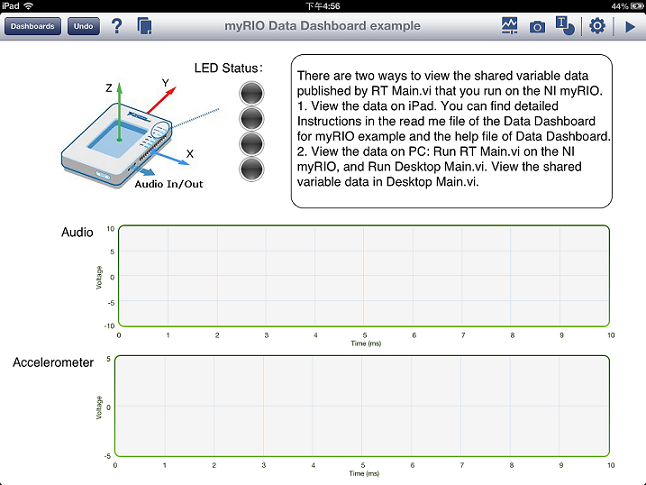
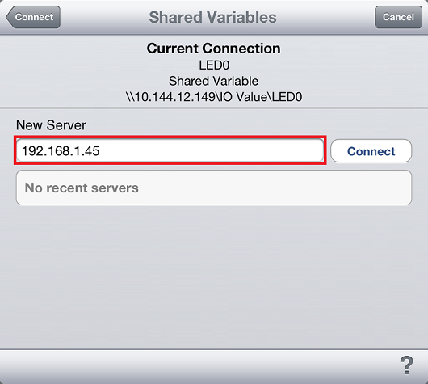
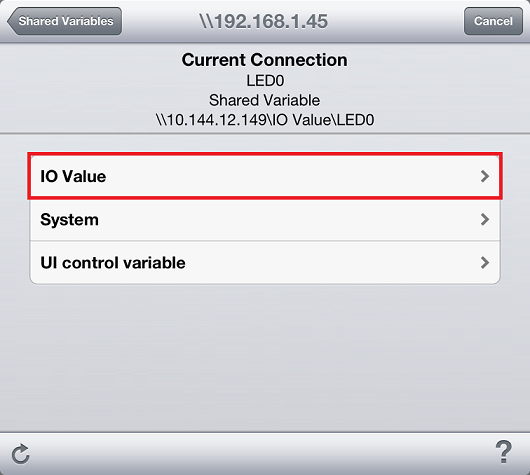

Data Dashboard Readme
This example acquires data from the myRIO and publishes data using shared variables. You can access these shared variables with an iPad running the sample dashboard.
System Requirements
Overview
Setting Up WiFi on the myRIO
Running This Example
Important Information
Development System
- LabVIEW Full or Professional Development System
- LabVIEW for myRIO Module
- LabVIEW Real-Time Module
- Network Variable Engine on NI myRIO
- Data Dashboard on iPad
Hardware
This example consists of the following files:
- RT Main.vi—Contains the main NI myRIO application. This VI runs on the NI myRIO.
- Desktop Main.vi—Contains the application to view data on PC. This VI runs on the PC.
- myRIO Data Dashboard example.lvdd—This is the Data Dashboard file that runs on the iPad.
The Data Dashboard works over WiFi connection. Make sure your PC, the myRIO and the iPad are in the same wireless subnet. (Typically, the first three parts of the IP address are the same for devices in the same subnet. For example, 192.168.0.1 and 192.168.0.2 are in the same subnet and 192.168.1.1 is in a different subnet.)

- Connect the myRIO to your PC via USB to display the myRIO USB Monitor.
- Click the Configure NI myRIO button to display NI Web-Based Monitoring and Configuration in the web browser.

- Click the Network Configuration button on the left side.

- Configure the settings for Wireless Adapter wlan0. Click the Save button. Copy or write down the wireless IP address assigned to your myRIO. After setting up WiFi, you can disconnect the USB cable from the myRIO.

- Open Data Dashboard for myRIO.lvproj in LabVIEW.
- Right-click the myRIO target in the Project Explorer and select Properties from the shortcut menu to display the myRIO Properties dialog box.
- Enter the wireless IP address from step 4 for IP Address/DNS Name.
- Click OK to apply the changes.
There are two ways to view the shared variable data published by RT Main.vi that you run on the NI myRIO. You will need an iPad if you view the data on iPad.
- View the Data on PC
- View the Data on iPad
View the Data on PC
In this case, you can connect to the myRIO via USB or WiFi. You need to make sure the target IP Address is correct for the target under each condition.
- Open Data Dashboard for myRIO.lvproj in LabVIEW.
- Open and run RT Main.vi. The VI deploys all the network-published shared variables to the myRIO.
- Connect signals to the myRIO channels. Observe the data that the myRIO acquires in the front panel window.
- Open and run Desktop Main.vi. The data in the front panel window should be the same as that of RT Main.vi.
View the Data on iPad
- Download the Data Dashboard app from the Apple App Store on your Apple iPad. Use iTunes to download the myRIO Data Dashboard example.lvdd file.

- Launch Data Dashboard on your iPad.
- Open myRIO Data Dashboard example.lvdd file in Data Dashboard.

- Open Data Dashboard for myRIO.lvproj in LabVIEW.
- Open and run RT Main.vi. The VI deploys all the network-published shared variable to the myRIO.
- Connect signals to the myRIO channels. Observe the data that the myRIO acquires in the front panel window.
- Link your dashboard controls and indicators. Tap the controls and indicators you want to monitor and select the Data Link to display the Connect dialog box.

- Select Shared Variables. Enter the myRIO IP address. Tap Connect to connect to the Share Variable Engine.

- Tap the name of the library that contains the deployed shared variable. Then, select your shared variable. You can see the data type of each shared variable below the variable name.

- Repeat step 7 to step 9 for each of the signals you want to monitor. Swipe the Data Dashboard page in order to see other controls and indicators.
- Run the dashboard by selecting Play in the upper right hand corner.
For help with Data Dashboard, please read the Developer Zone Tutorial: Getting Started with the Data Dashboard for LabVIEW. These instructions assume you already have the app downloaded.
Copyright
© 2013 National Instruments. All rights reserved.
Under the copyright laws, this publication may not be reproduced or transmitted in any form, electronic or mechanical, including photocopying, recording, storing in an information retrieval system, or translating, in whole or in part, without the prior written consent of National Instruments Corporation.
National Instruments respects the intellectual property of others, and we ask our users to do the same. NI software is protected by copyright and other intellectual property laws. Where NI software may be used to reproduce software or other materials belonging to others, you may use NI software only to reproduce materials that you may reproduce in accordance with the terms of any applicable license or other legal restriction.
End-User License Agreements and Third-Party Legal Notices
You can find end-user license agreements (EULAs) and third-party legal notices in the following locations after installation:
- Notices are located in the <National Instruments>\_Legal Information and <National Instruments> directories.
- EULAs are located in the <National Instruments>\Shared\MDF\Legal\license directory.
- Review <National Instruments>\_Legal Information.txt for information on including legal information in installers built with NI products.
Trademarks
Refer to the NI Trademarks and Logo Guidelines at ni.com/trademarks for information on National Instruments trademarks. Other product and company names mentioned herein are trademarks or trade names of their respective companies.
Patents
For patents covering the National Instruments products/technology, refer to the appropriate location: Help»Patents in your software, the patents.txt file on your media, or the National Instruments Patent Notice at ni.com/patents.